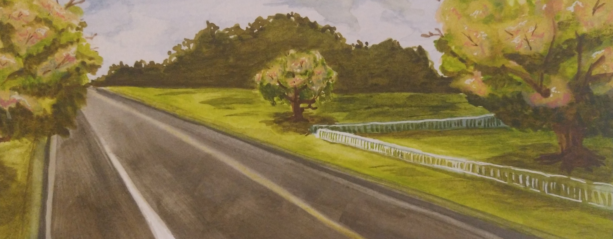

Town History
go back homie
- 1715: Town Founded
- 1720: Shrine Ruins Discovered
- 1730: Town's first Murder
- 1735: Town Newsletter established
- 1800: Lower portion of town floods
- 1860s: Old Bridge Collapses
- 1910: Railroad built near the Town
- 1920s: Newletter Shuts Down
- 1925: Lake Fargo parade established
- 1955: Diner founded
- 1972: Oldest Church in town shuts down
- 2024: present day
